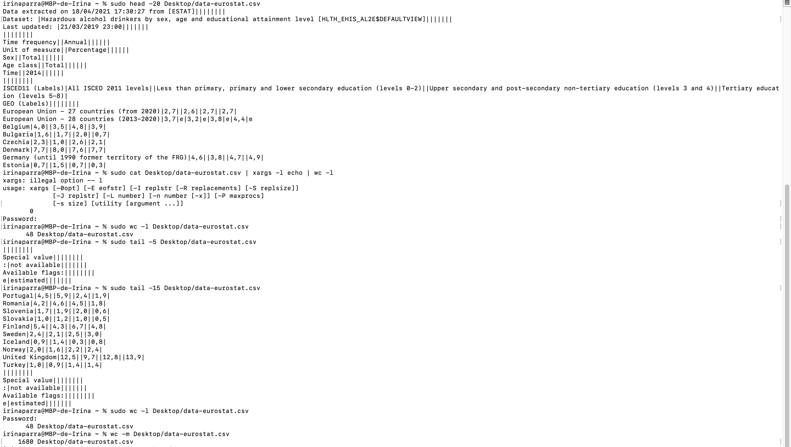
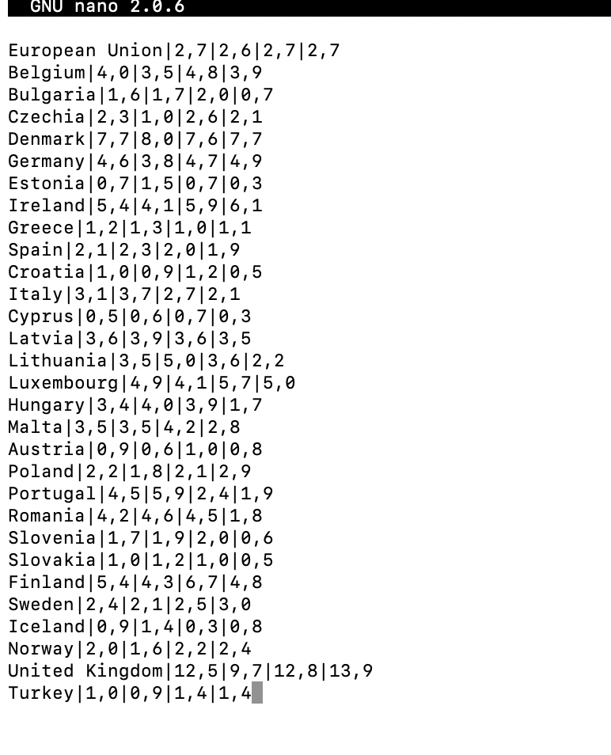
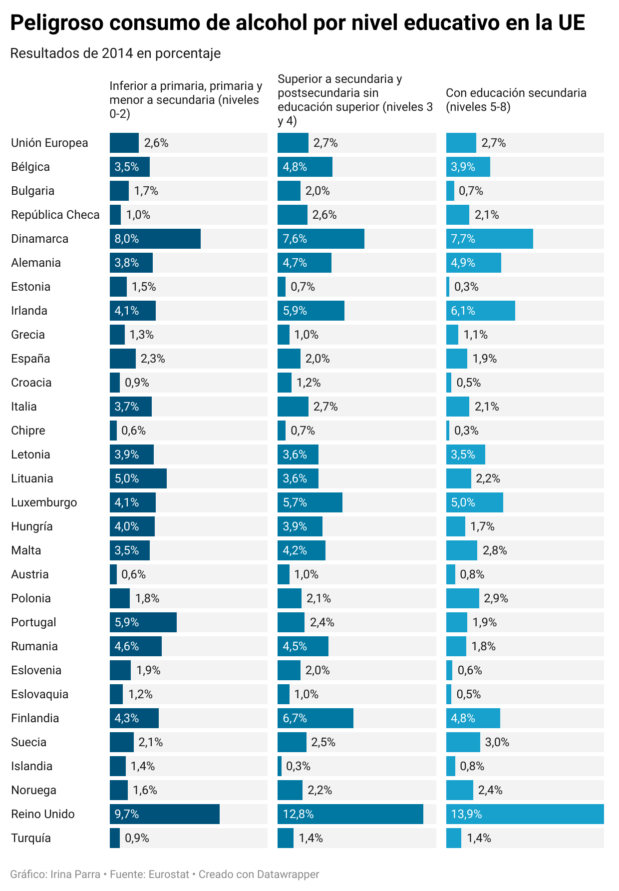
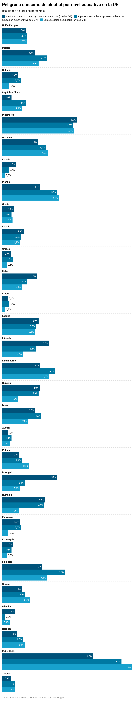

Gráficos con Datawrapper
Para esta actividad he escogido un documento de Eurostat sobre el consumo de alcohol en Europa en cantidades peligrosas y por nivel educativo. En esta web hay diferentes formatos de descarga, pero debes acceder a “Options and other formats” y escoger “text” para poder descargarlo en .csv. Después, en field delimiter seleccionar “comma” para obtener el .csv separado por comas.
Al descargarlo se puede abrir ya con el terminal. En mi caso lo tenía guardado en el escritorio, así que esta fue la ruta que indiqué en todo momento.
Lo primero que he hecho ha sido comprobar cuánto espacio ocupa el archivo para poder compararlo con el resultado después de limpiarlo. También cuántas líneas tiene por arriba y por abajo para hacerme una idea de lo que tendré que borrar y qué finales son innecesarias. En este caso las primeras no aportan nada, pero sí debo dejar la que incluye los parámetros educativos para que las gráficas tengan sentido. Para saber las líneas he usado el comando wc -l y con head y tail las que hay por arriba y por abajo. Tenemos información que quitar desde arriba 12 líneas y de abajo 5 de las 48 totales. Los caracteres pueden servir para navegar desde filas y limpiar algunas columnas, para esto el mejor comando es wc -m.
Con estos datos puedo comenzar a limpiar el documento usando nano. Las primeras líneas nos sobran y las eliminamos por completo con Control + K y las columnas que se ven entre medio de cada dato en blanco con Control + _, nano nos pide indicar fila y número de espacio y cuando se lo indicamos nos lleva directamente. En este caso se trata de fila 1 espacio 19. También he eliminado datos en filas, por ejemplo, el número de estados miembros de la Unión Europea que se especifican anteriormente.
Con este resultado hemos eliminado las columnas. Si dejamos la línea horizontal al final de cada número el programa en el que insertemos el documento puede leerlo como una nueva celda, así que hay que eliminarlo. Finalmente podemos subir este documento a Datawrapper y obtener los gráficos. Posteriormente traduje el nombre de los países y la división entre escolarización para que estuviese en español.
Por último, en la siguiente imagen podemos ver que efectivamente ahora tenemos menos líneas y caracteres
.Propuestas de gráficos
De entre las diferentes opciones en Datawrapper he pensado que estas tres serían las que mejor reflejan los resultados y hacen la información más comprensible de manera rápida.
Opción 1
Puedes verla mejor aquí
Opción 2
Puedes verla mejor aquí
Opción 3
Puedes verla mejor aquí
